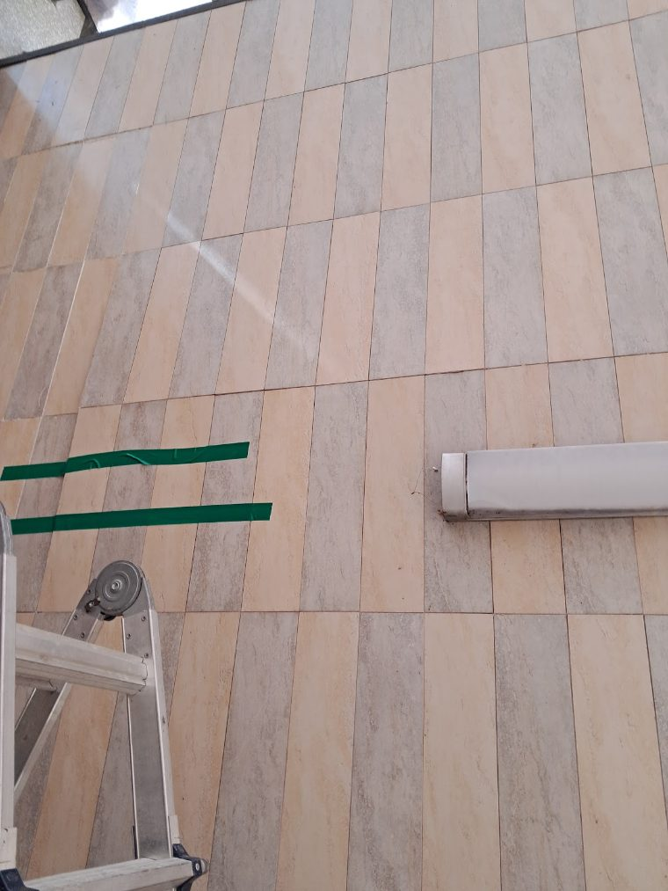
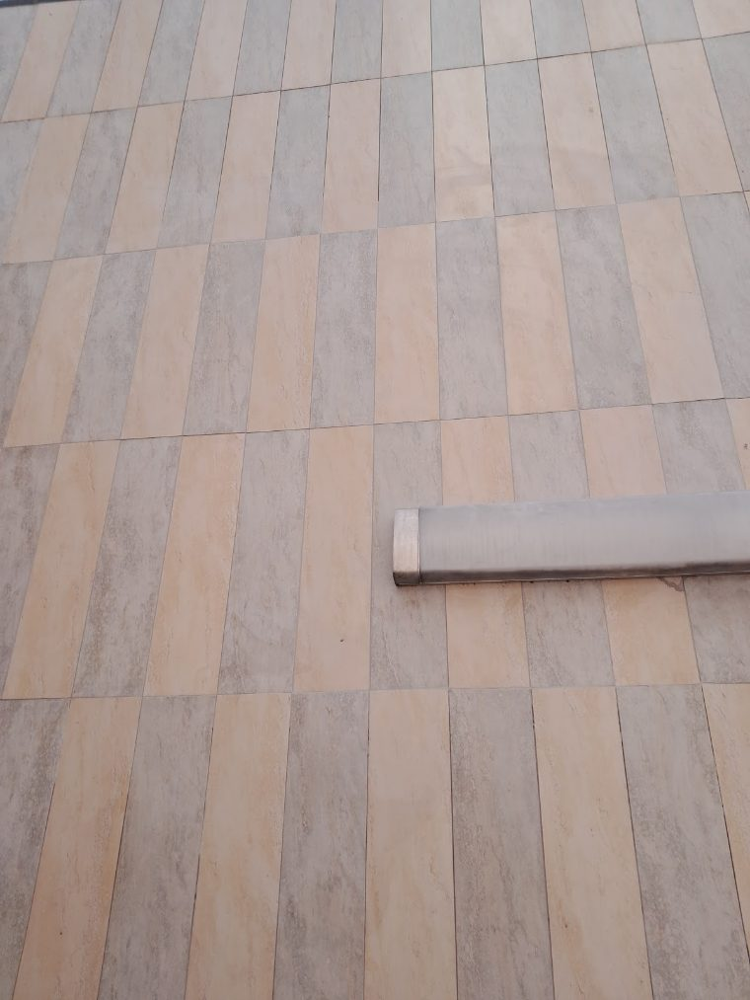
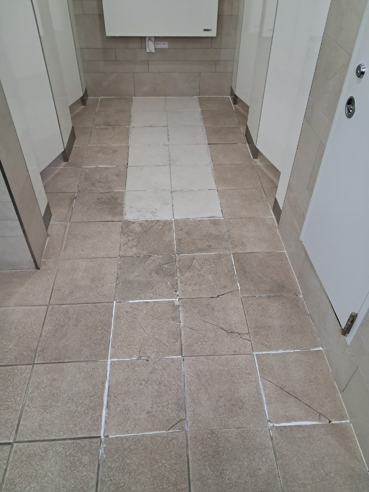
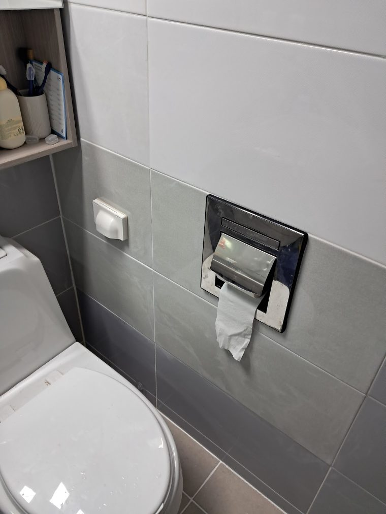
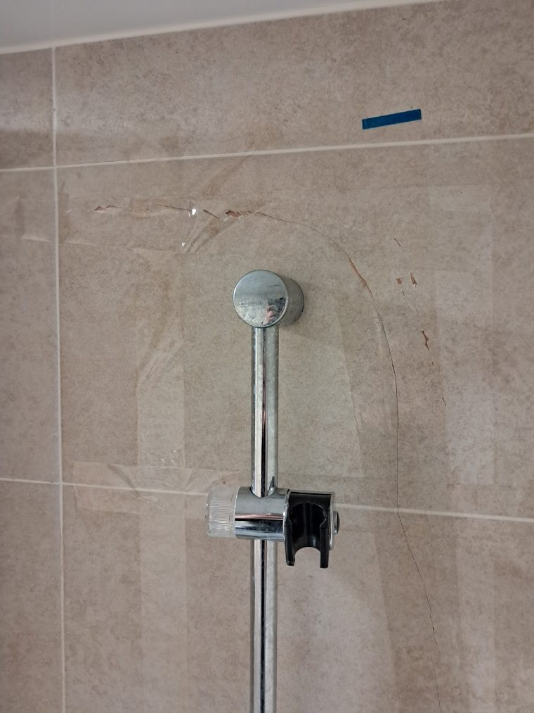
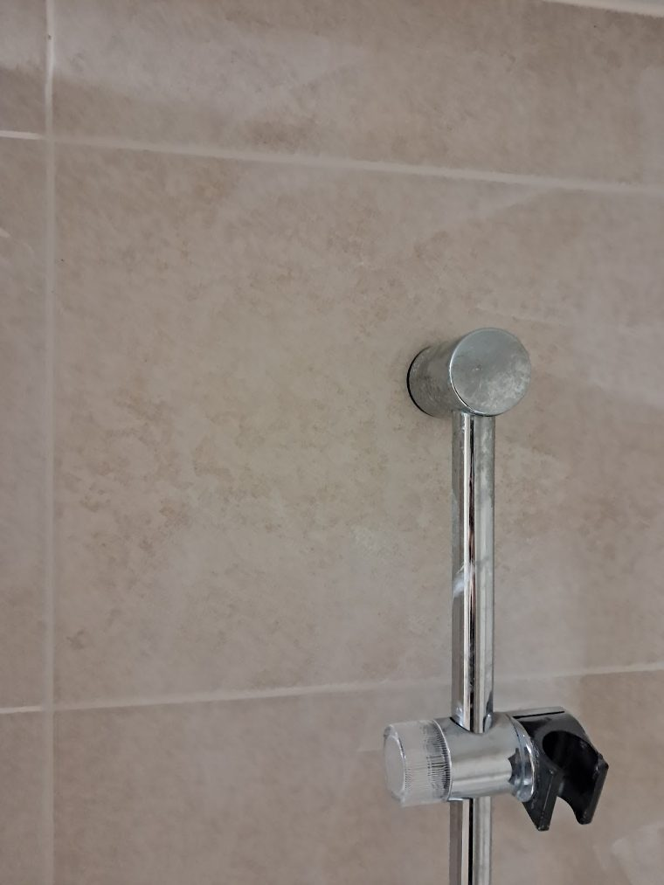
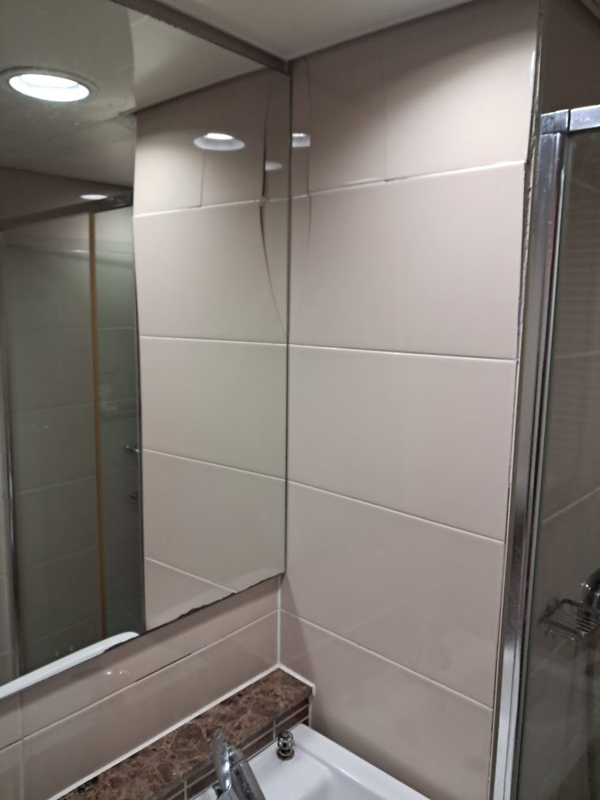

BEFORE · AFTER대표 직접 시공


깨지거나 들뜬 타일은 보기에도 불편하고, 날카로운 조각이 생기면 다칠 수도 있습니다.
문제 있는 장만 골라 교체하는 부분 보수를 합니다.
집 안 타일뿐 아니라 상가 입구 바닥, 빌라 계단, 외벽 타일도 상담합니다.
작업 전, 작업 과정, 작업 후를 사진으로 남긴 실제 현장입니다.
카드의 버튼을 눌러 비교해 보세요.












네. 깨지고 들뜬 타일, 한 장도 꼼꼼하게 봅니다.
사진을 먼저 보내주시면 됩니다.
타일 한 장이라도 위치와 주변 상황, 작업 난이도에 따라 비용이 달라 정해진 가격표가 없습니다.
사진을 보내주시면 꼼꼼히 보고 최대한 바로 견적을 드리고, 사진으로 어려우면 직접 방문해서라도 최소 견적을 맞춰드립니다.
같은 타일은 아파트·빌라 관리사무소나 댁에 따로 보관해 둔 타일이 있을 때만 쓸 수 있습니다.
보관해 둔 타일이 없으면 같은 타일은 구할 수 없어서, 거래처를 통해 최대한 비슷한 타일을 찾아 맞춥니다.
네. 대표인 제가 직접 상담하고 시공까지 합니다.
서울·경기 전 지역 출장 가능합니다.
경기 근교는 예약하시면 일정을 맞춰 방문합니다.
문제 있는 타일 1장, 주변이 다 같이 보이게 넓게 찍은 사진 1장이면 충분합니다.